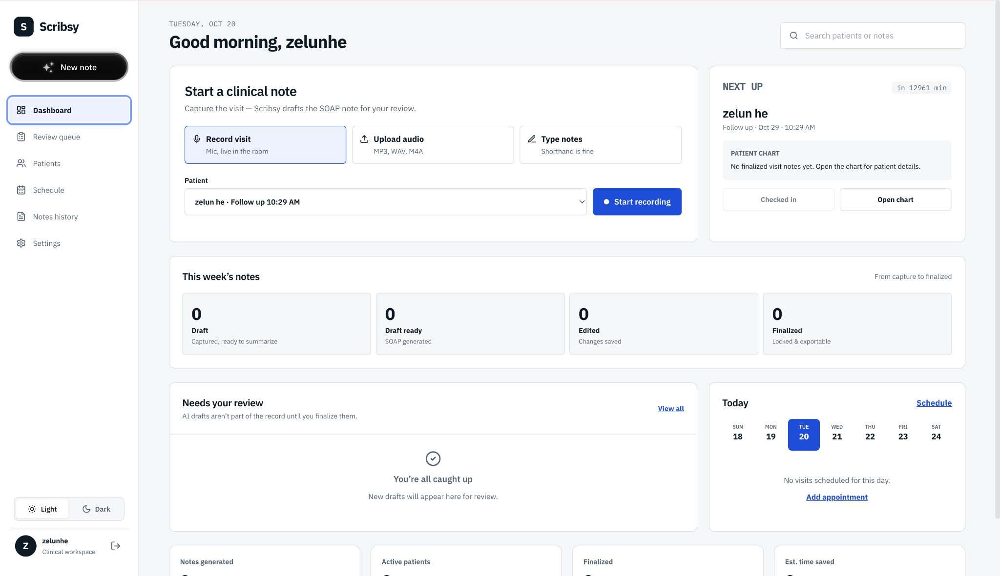

CLINICAL DOCUMENTATION
Scribsy
Software engineering intern · N-of-1 AI
Jun – Aug 2025
Stack Next.js · FastAPI
- Challenge
- Turn recorded sessions into structured clinical notes.
- My contribution
- Architected audio transcription, SOAP note generation, and note management.
- Delivered
- An audio-to-note workflow for preparing and managing practitioner session notes.